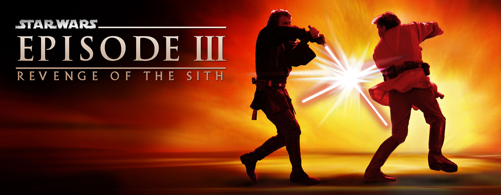
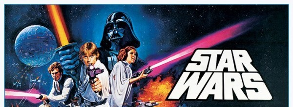

Comparing the Star Wars Saga
For my corpus analysis I chose the scripts of the Star Wars movies. I knew that each movie had a different director and writer, so I wanted to see if I could find any patterns in the scripts. I am going to break up the corpuses into the first 4 movies and the last 3 movies.
What scripts did I use for the corpus and how did I obtain them?
I am using the scripts from the first 7 Star Wars movies. I obtained them from The Internet Movie Script Database (IMSDb). I copied and pasted the scripts into a text file.
From young Padawan to Sith Lord: Analyzing Anakin Skywalker's Growth through out the Star Wars Saga.
I began my analysis on specific character's and their growth through the movies. My first character I focused on was Anakin Skywalker.

In Episode 1, Throughout the film, Anakin's dialogue and actions showcase his kind-hearted nature, his desire to help others, and his longing for freedom. He forms a close bond with Padmé Amidala, the young queen of Naboo, and expresses his dream of becoming a Jedi to free slaves like himself. Anakin's innocence and inherent goodness are contrasted with subtle hints of his future turn to the dark side. His fear of losing his mother, his anger towards those who threaten his loved ones, and his quick attachment to Padmé all lay the groundwork for his eventual fall.
In Episode 2, Anakin's dialogue portrays him as a confident, yet impulsive Padawan. He often expresses his frustrations with Obi-Wan's mentorship and his desire to prove himself. For example, when Obi-Wan tells him, "You will be a Jedi. I promise," Anakin responds, "I am a slow learner." This exchange highlights Anakin's impatience and his struggle to find his place within the Jedi Order.
In Episode 3, Anakin's dialogue shifts to reflect his growth as a Jedi Knight and his internal conflicts. He grapples with his loyalty to the Jedi and his growing mistrust of the Council. This is evident when he says, "I'm not the Jedi I should be. I want more, and I know I shouldn't." His conversations with Padmé also reveal his deep-seated fear of losing her, foreshadowing his eventual turn to the dark side.
By Episode 4, Anakin has fully transformed into Darth Vader. His dialogue is marked by a cold, authoritative tone, reflecting his position as the Emperor's enforcer. When addressing Princess Leia, he threatens, "I want to know what happened to the plans they sent you." This stark contrast to his earlier dialogue showcases his complete embrace of the dark side.
N-Gram Analysis